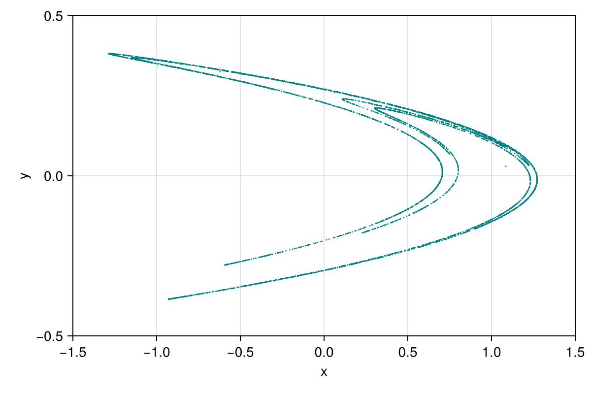
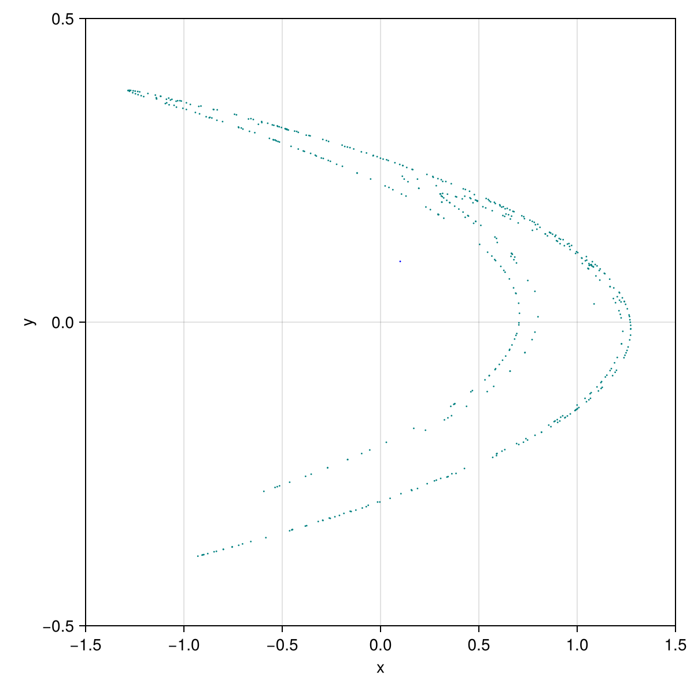
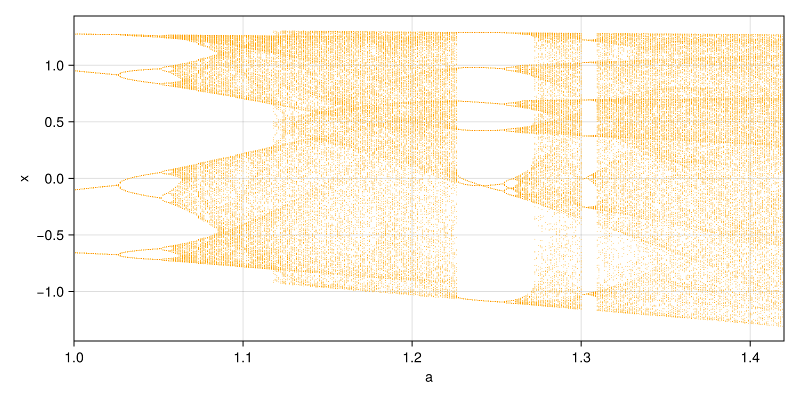
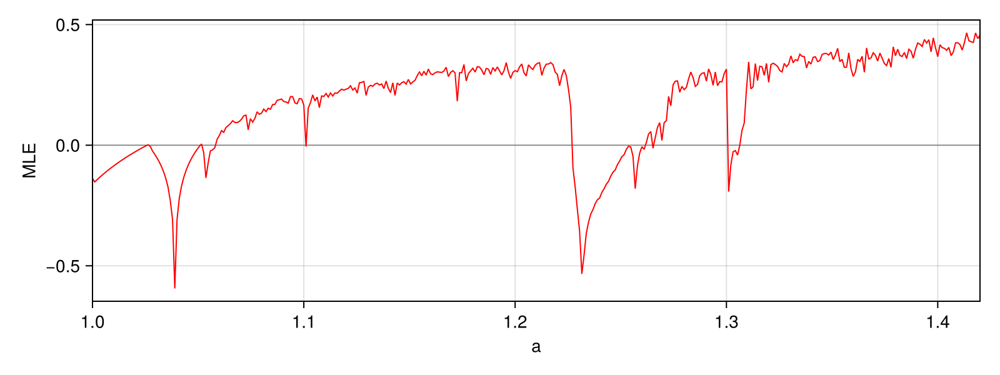

Hénon map
The simplest use of MappyDS: a map that is discrete from the start. The Hénon map
\[x_{k+1} = 1 - a x_k^2 + y_k, \qquad y_{k+1} = b x_k\]
is declared as a Mapping and wrapped in a Diffeomorphism. With the classical values $a = 1.4$, $b = 0.3$ the orbit settles on the Hénon strange attractor. Python counterpart: examples/henon.py of mappy-ds.
using MappyDS, CairoMakie, StaticArrays
using MappyDS: image # Makie exports an `image` plot function as well
henon = Mapping(2; name = :henon) do y, p
x, u = y
return SVector(1 - p.a * x^2 + u, p.b * x)
end
hmap = Diffeomorphism(henon)
params = (a = 1.4, b = 0.3)
y0 = [0.1, 0.1]2-element Vector{Float64}:
0.1
0.1Orbit
image applies the map once; iterating it collects the points of an orbit on the attractor.
function orbit(map, y0, params, n)
points = Matrix{Float64}(undef, 2, n)
y = y0
for i in 1:n
y = image(map, y, params)
points[:, i] = y
end
return points
end
points = orbit(hmap, y0, params, 5000)
fig = Figure(; size = (600, 400))
ax = Axis(fig[1, 1]; xlabel = "x", ylabel = "y", limits = (-1.5, 1.5, -0.5, 0.5))
scatter!(ax, points[1, :], points[2, :]; markersize = 2, color = :teal)
fig
The same picture is produced by plot2d with a fixed number of frames (the viewer draws one image point per frame; only_map suppresses the jumps between successive points):
config = PlotConfig(;
xlim = (-1.5, 1.5), ylim = (-0.5, 0.5), xlabel = "x", ylabel = "y",
only_map = true, point_style = LineStyle(; color = :teal, alpha = 1.0),
markersize = 2.0, param_keys = [:a, :b],
)
plot2d(hmap, y0, params, config; frames = 500, show = false)
With GLMakie instead of CairoMakie the figure keeps iterating and reacts to the user: click to restart from a new initial point, f toggles the jumps between successive points, p switches between a and b and the up/down keys change the selected parameter.
using GLMakie
plot2d(hmap, y0, params, config)Bifurcation diagram
Sweeping $a$ over $[1, 1.42]$ and recording $x$ after a transient gives the one-parameter bifurcation diagram (Miino 2024, Fig. 10, top). The state is carried over from one value of $a$ to the next.
a_range = (1.0, 1.42)
y_sweep = [-1.06770401965, 0.368194183333] # on the attractor at a = 1.42
function bifurcation_diagram(map, params, a_values, frames)
transient = frames ÷ 4
xs = Matrix{Float64}(undef, frames - transient, length(a_values))
y = y_sweep
for (k, a) in enumerate(a_values)
p = merge(params, (a = a,))
for i in 1:frames
y = image(map, y, p)
i > transient && (xs[i - transient, k] = y[1])
end
end
return xs
end
a_values = range(a_range...; length = 400)
xs = bifurcation_diagram(hmap, params, a_values, 400)
fig = Figure(; size = (800, 400))
ax = Axis(fig[1, 1]; xlabel = "a", ylabel = "x", limits = (a_range..., nothing, nothing))
scatter!(ax, repeat(collect(a_values); inner = size(xs, 1)), vec(xs); markersize = 1, color = :orange)
fig
Maximum Lyapunov exponent
Benettin's method uses the Jacobian returned by image_detail: a unit tangent vector is pushed forward by res.jac at every iteration and renormalised, and the exponent is the mean of the logarithmic growth factors. It is positive exactly in the chaotic windows of the diagram (Miino 2024, Fig. 10, bottom).
function lyapunov(map, params, a_values, frames)
mle = Float64[]
y = y_sweep
for a in a_values
p = merge(params, (a = a,))
unit = [1.0, 0.0]
total = 0.0
for _ in 1:frames
res = image_detail(map, y, p)
y = res.y
unit = res.jac * unit
growth = sqrt(sum(abs2, unit))
total += log(growth)
unit ./= growth
end
push!(mle, total / frames)
end
return mle
end
mle = lyapunov(hmap, params, a_values, 400)
fig = Figure(; size = (800, 300))
ax = Axis(fig[1, 1]; xlabel = "a", ylabel = "MLE", limits = (a_range..., nothing, nothing))
hlines!(ax, [0.0]; color = :gray, linewidth = 0.8)
lines!(ax, collect(a_values), mle; color = :red, linewidth = 1)
fig
This page was generated using Literate.jl.